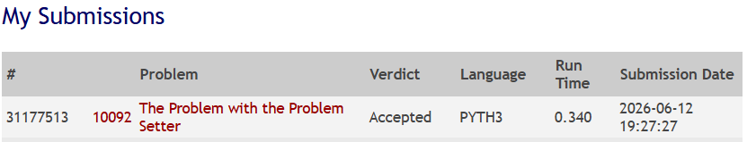

UVA Online Judge — Problema 10092
Seleção de problemas por categorias usando
Fluxo Máximo com
Edmonds-Karp
O que precisa ser resolvido e por que é um problema de fluxo.
Um elaborador de provas possui nk categorias e np problemas. Cada categoria exige uma quantidade específica de problemas para o teste.
Cada problema pode pertencer a várias categorias, mas só pode ser usado uma vez. Se atribuído a uma categoria, não pode ser reutilizado em outra.
Determinar se é possível selecionar problemas que atendam a todas as demandas simultaneamente. Em caso positivo, mostrar qual problema vai para qual categoria.
A restrição de uso único + múltiplas opções de atribuição = emparelhamento bipartido com demandas, que se reduz naturalmente a uma rede de fluxo.
Como transformar o problema em uma rede com origem, sorvedouro e capacidades.
Distribui demanda
cap = demanda[i]
cap = 1 (compat.)
cap = 1 (uso único)
Cada capacidade representa uma restrição real do enunciado.
| Aresta | Capacidade | O que limita | Justificativa |
|---|---|---|---|
| Source → Cat_i | demanda[i] |
Quantos problemas a categoria precisa | Impõe que a categoria receba exatamente o exigido |
| Cat_i → Prob_j | 1 |
Compatibilidade problema ↔ categoria | Existe se o problema pertence à categoria |
| Prob_j → Sink | 1 |
Uso único de cada problema | Garante que o problema é usado no máximo uma vez |
Uma unidade de fluxo percorrendo Source → Cat_i → Prob_j → Sink significa:
"o problema j foi atribuído à categoria i".
Se o fluxo máximo = soma das demandas, todas as categorias foram atendidas.
Representa a necessidade total de problemas. As arestas impõem a demanda de cada categoria.
Representa o uso efetivo de um problema. Capacidade 1 garante uso único.
Especialização do Ford-Fulkerson usando BFS para caminhos aumentantes.
Complexidade O(E × f), onde f = valor do fluxo. Pode ser lento com capacidades grandes.
Complexidade O(V × E²), independente do valor do fluxo. Mais previsível e seguro para este problema.
Permitem corrigir decisões anteriores. Se um problema foi atribuído "errado", uma iteração posterior pode reverter via aresta reversa.
Instância do enunciado: 3 categorias, 5 problemas — demandas: 2, 2, 1
Iteração 6: BFS não encontra caminho → PARADA
Fluxo máximo = 5 = 2+2+1 = soma das demandas ✓
| Categoria | Problemas |
|---|---|
| Cat 1 | Problema 1, Problema 4 |
| Cat 2 | Problema 2, Problema 5 |
| Cat 3 | Problema 3 |
Análise de desempenho e tratamento de situações-limite.
| Aspecto | Valor |
|---|---|
| Tempo | O(V · E²) |
| Espaço | O(V + E) |
| V (vértices) | nk + np + 2 ≤ 1.022 |
| E (arestas) | O(nk · np) ≤ ~21.000 |
Com nk ≤ 20 e np ≤ 1000, a execução é rápida e bem dentro dos limites do UVA. A estrutura dominante de memória é a lista de arestas residuais.
Fluxo < demanda → imprime 0
Múltiplas arestas Cat→Prob, mas cap=1 no Sink garante uso único
Impossível: fluxo máximo ≤ np < demanda
Loop lê até encontrar 0 0

Obrigado! Alguma pergunta?